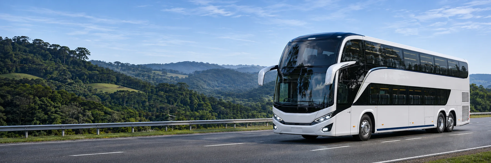

Guia de Jornada
Consulte as orientações da sua rota, encontre formulários e acompanhe os avisos da equipe.
Guias em destaque
Ver biblioteca
Empresa
Guia para novos motoristas
Prepare o celular para receber suas rotas e veja por onde começar na primeira viagem.
DLV
Em caso de sinistro
O que fazer quando há um acidente, desde o atendimento aos passageiros até o registro no DLV.

Departamento Pessoal
Benefícios e parceiros
Veja quais parceiros oferecem descontos para a equipe e confira as condições antes de usar um benefício.
Avisos
Nenhum aviso no momento.